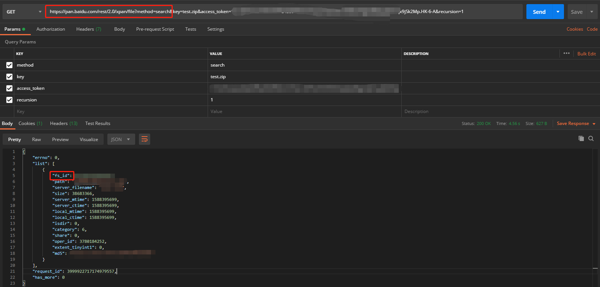
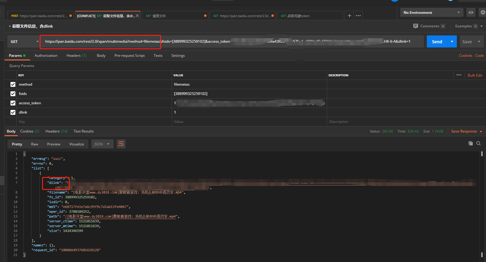
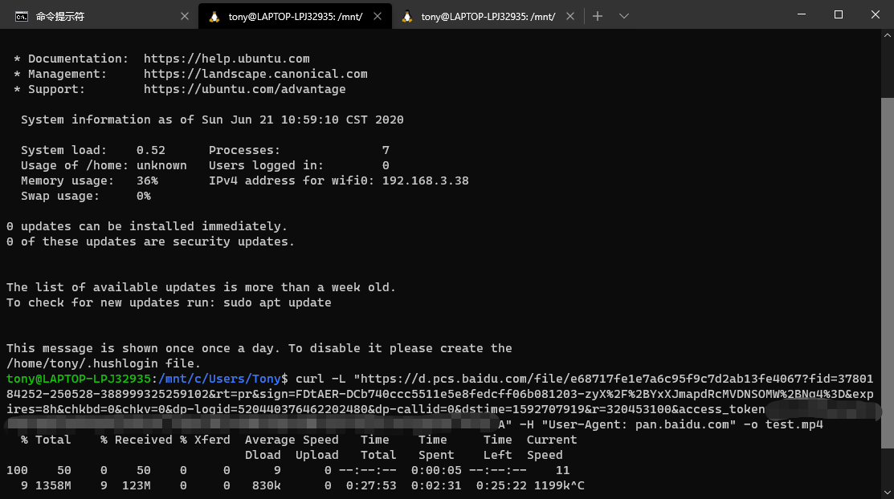
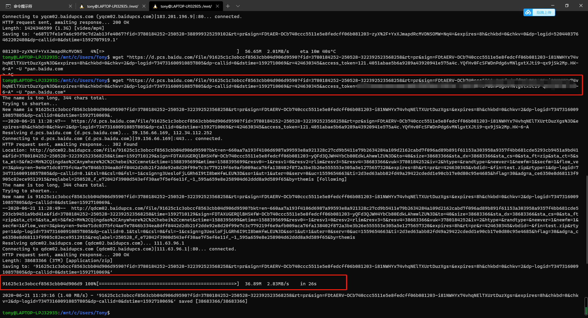

距离上次写blog，已经过去1个月了，近期由于项目不断在推进，所以没时间写。本来这篇想聊聊分布式的一些小知识点的，也是由于时间紧张，先不写了吧，正好在写一个从自动化工具，其中包含了从百度网盘下载文件的业务，就单拎出来聊一聊。
上篇关于怎么接入百度网盘开放平台已经有了一些介绍，然后上篇主要聊了聊上传，这篇来聊聊下载，而关于授权之类的操作，就不多说了。
关于下载，网盘的api文档给的介绍也是惜字如金，不过还是那句话，能力都放开给你了，还要什么自行车。
经过一番折腾，算是有了点门道，简单在这里总结一下。
首先来说下载工具，接口上的例子是用的curl，但一般我们用curl都是来做一些测试性的操作，比如模拟表单提交等。虽然curl也能通过指定参数来进行下载操作，但一般我下载还是习惯用wget。
关于这两个工具的介绍，推荐一篇https://blog.csdn.net/yushupan/article/details/83578633（尽管我很不喜欢csdn的分享风格，但这篇写的还不错）。
好了，不扯了，来看看下载步骤。
这里我还是配合postman来演示。
1.根据接口介绍，要下载文件的话，需要获取一个关键参数——dlink.
而要获取这个参数，首先要得到文件的基本信息，可以通过列表接口或者搜索接口来获取，如下

关键的内容是接口地址：https://pan.baidu.com/rest/2.0/xpan/file?method=search，以及响应内容中的fs_id这个参数。
通过fs_id这个参数就可以去获取dlink了
2.获取dlink

获取dlink了之后，我们就可以去下载这个文件了，注意下载的时候这个dlink中也要加上access_token参数才可以下载，且dlink是有有效期的，一般是8个小时内有效（绝大多数文件8小时内都能下载完成吧）。
在看下载
首先是通过curl下载，注意，Windows下使用curl的话，需要先下载curl环境才行，同样wget也是，这两个工具都是linux下的原生工具。
我这里演示Ubuntu18.04环境下的下载。

再来看看通过wget下载

这里因为我也是刚开始测试，发现这个wget在Windows环境下无法下载dlink文件，在linux环境下就可以，还没查到原因。还要指出的一点是，wget下载的速度比curl快很多！
正如我分享的哪个链接里所说，如果你是单纯的下载需求，用wget更合适。
好了，流程搞明白后，得到结论是可以通过接入网盘接口，来实现自动化的下载服务。
我这里简单写了点代码，还没做整理，又怕接下来一段时间又没时间更博了，就先这样记录一下吧。
对照上面的流程，首先是对接搜索的接口，获取fs_id
1 | //搜索网盘文件，获取fs_id |
然后，通过fs_id获取dlink
1 | //单文件下载 |
至此，和百度网盘的对接告一段落，开始借助curl进行下载，这段我就不贴了，就是调用curl和调用cmd.exe步骤是一样的，就是注意下参数拼接即可。
好了，下载的流程比起上传来说要简单许多，之所以自己开发时因为业务需要，市面上的网盘下载工具无法满足或者满足的不够好。好了就先这样吧，得接着搬砖去了。